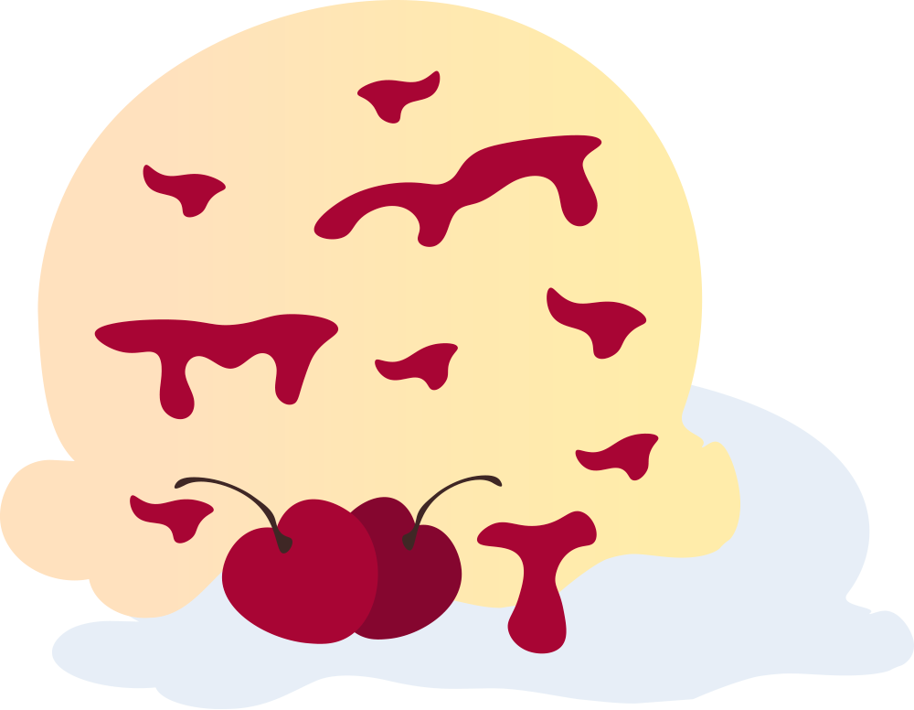
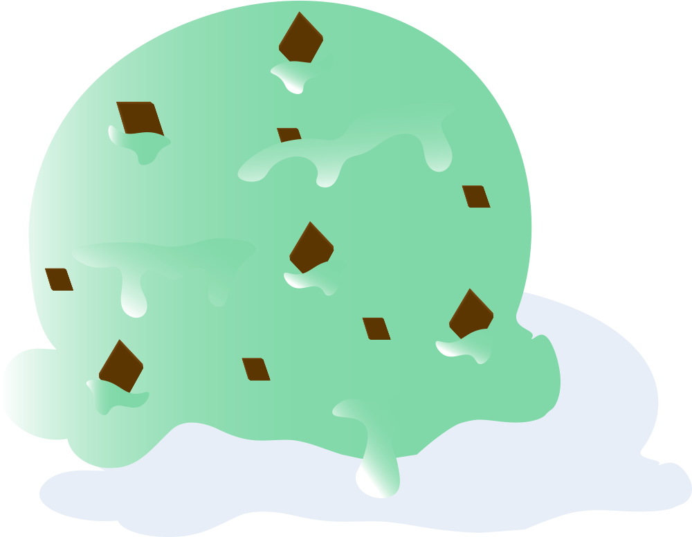
Before 9
Chokolade
Flødebolleræs
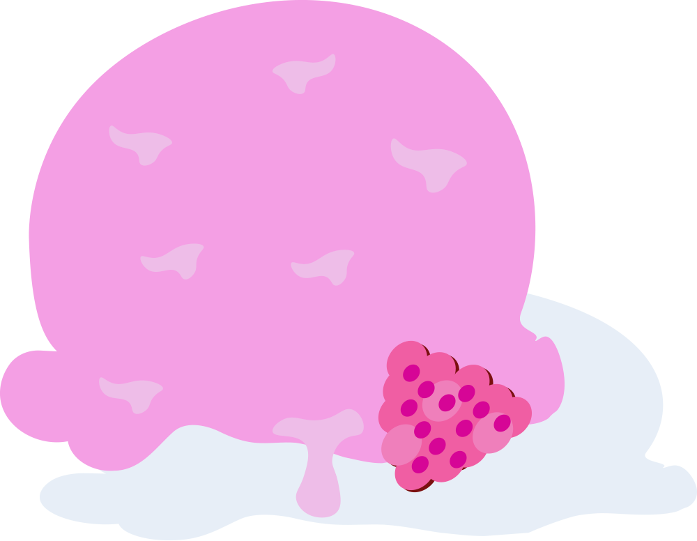
Hindbær
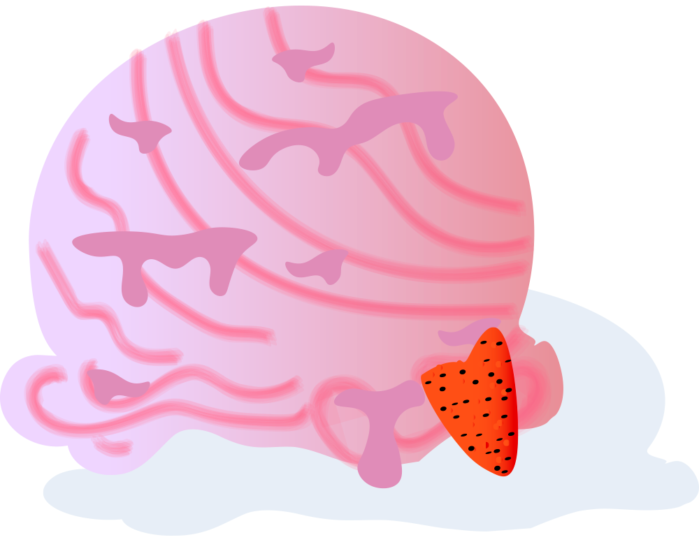
Jordbær
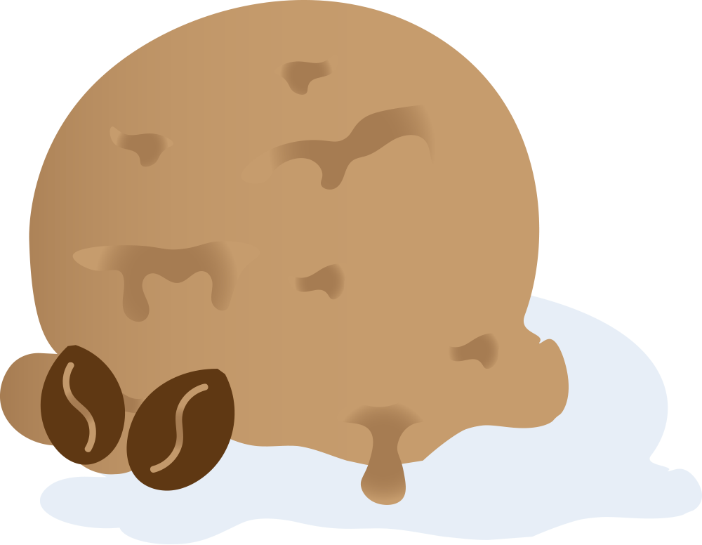
Kaffe
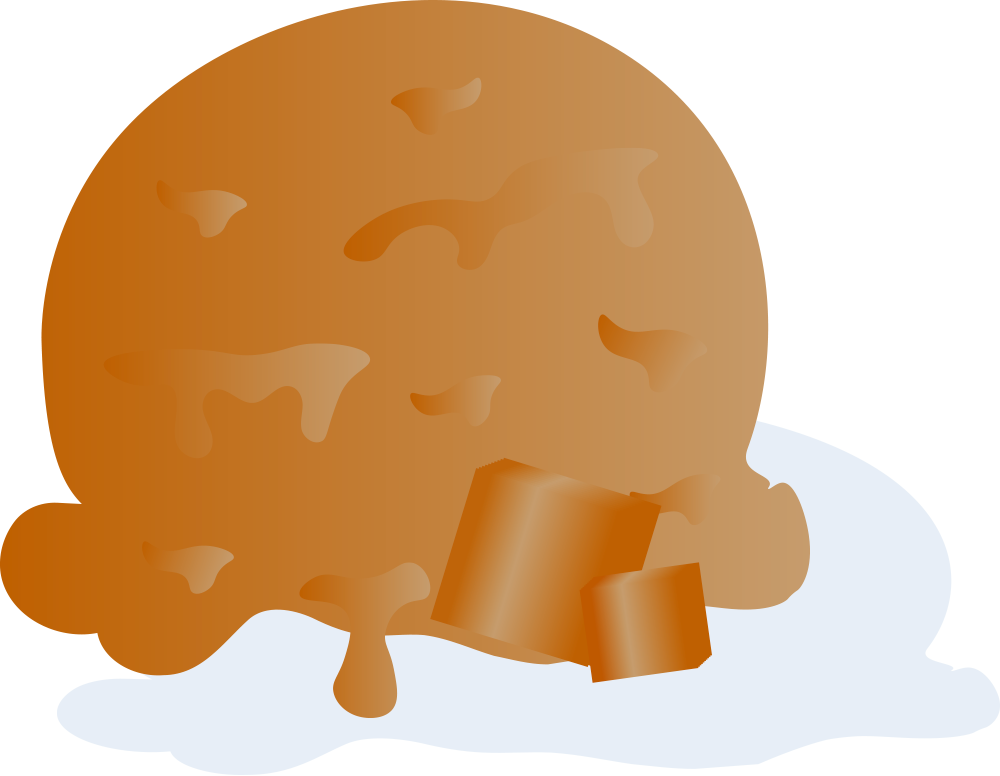
Karamel
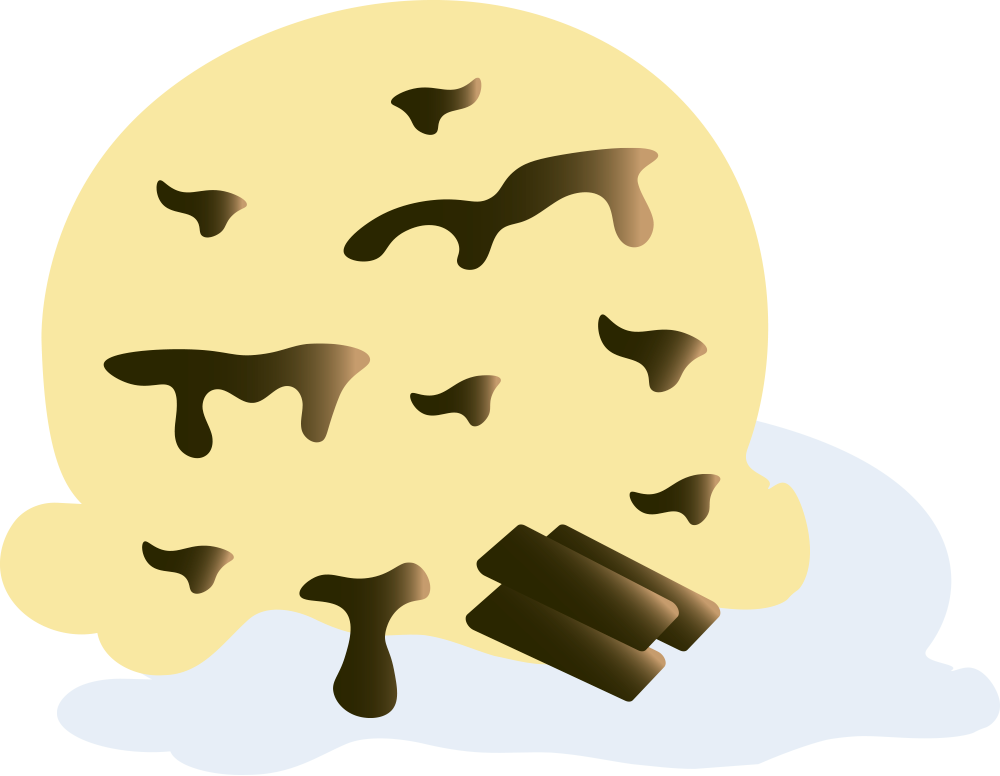
Lakrids
Lemone
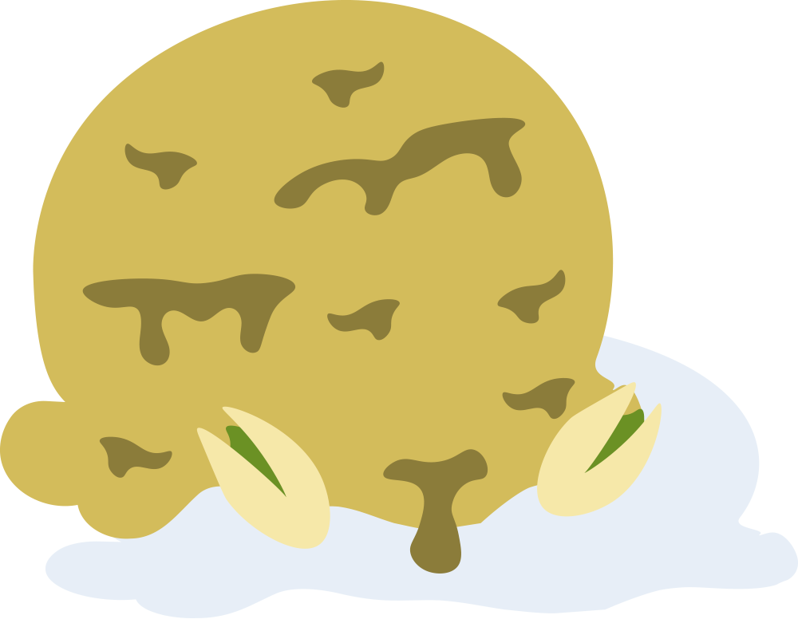
Milk and Cookies
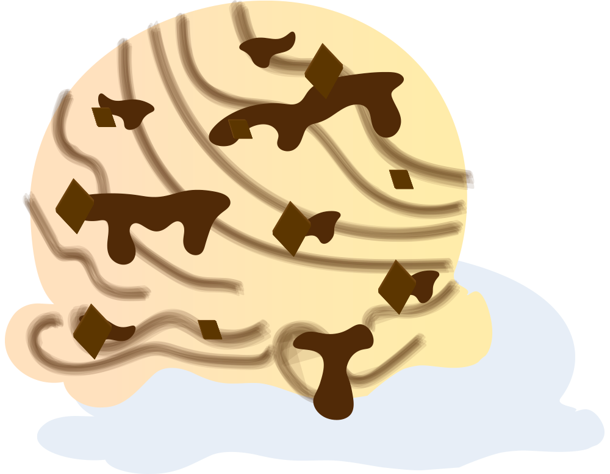
Pistacie
I løbet af en hel sæson når vi vidt omkring med de forskellige smage i disken. I gennemsnittet når vi op på op til 60 varianter!
Vi laver isen på stedet og på gammeldags manér – men har topmoderne maskiner til hjælp. God is tager tid. Vi laver basen på primært økologisk sødmælk, der pasteuriseres og modnes for at sikre det bedste resultat og konsistens af den færdige is. God is tager tid – ligesom god vin og godt brød. Vores sorbetis er lavet af friske frugter eller frosne/friske bær. Smagen kan derfor variere fra gang til gang alt efter frugtens modningsgrad. Vi bestræber os på at vælge frugt, der er fuldmodent for at sikre et højt frugtsukker- og ikke mindst smagsindhold. Derfor ved vi heller ikke, hvilken is vi vil lave, før vi har besøgt grønthandleren og set, duftet og smagt på frugten.
Vi er dog overbevist om, at man nogle gange bare har lyst til en klassiker. Derfor har vi som udgangspunkt 26 forskellige is i disken hver dag, hvoraf 14 er vores klassikere.
Klassikerne kan du finde nedenfor - de andre varianter kan opleves live i disken.
Vi laver løbende vores lækre, hjemmelavede ispinde ud fra de varianter,
vi har i isdisken. Vi kan lide at eksperimentere, og derfor laver vi kun et
mindre antal af alle slags ispinde.
Ta’ et kig i fryseren, når du er forbi Ishuset. Vi ved, at der er en
ispind for enhver smag.
Du kan få vores is som takeaway i komposterbare bokse. Du kan vælge is frit fra disken – og vi tilbyder bokse i 1 liter og 1,5 liter. Du kan også ringe og bestille din takeaway boks på 86761399 – så er den klar til afhentning, når du kommer.
Vores lille festfryser elsker at blive inviteret i byen. Den har været med til barnedåb, fødselsdage, konfirmationer, bryllupper, studenterfester, vejfester og mange, mange andre festlige lejligheder. Hvis du kunne tænke dig at bestille den til din fest, så ring eller skriv til os.